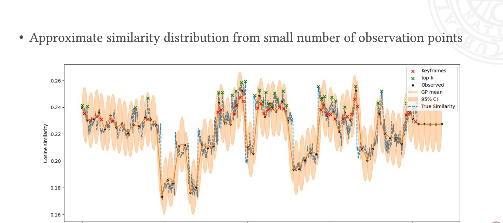

Probabilistic frame selection for efficient video understanding with multimodal LLMs.

Video LLMs must reason over long videos under tight context budgets: a 10-minute clip at 30 FPS already yields 18,000 frames, far beyond typical token limits. Uniform down-sampling is cheap but query-agnostic, while scoring every frame with an MLLM is accurate but prohibitively expensive.
ProbFaS addresses this trade-off by treating frame–query similarity as a smooth function of time and approximating it with a Gaussian process from a small number of scored observations. Keyframes are then selected from the estimated similarity curve via greedy top-k with NMS, binned sampling, or a determinantal point process (DPP) that encourages diversity through cross-frame similarity.
On VideoMME (900 videos, 2,700 QA pairs) with Qwen3VL-2B, GP + 32-DPP reaches 59.6% overall accuracy, outperforming uniform-32 (56.0%) and full-video NMS-32 (58.2%). Joint work with MSc student Hugo Eidmann.